Candles
Hand-poured in coconut-and-rapeseed wax, with a cotton wick and one of twelve scents. In a vessel you refill, not replace.
- Sizes
- 120 / 220 / 400 g
- Burn time
- 25 – 80 hours
- Wax
- Coconut & rapeseed
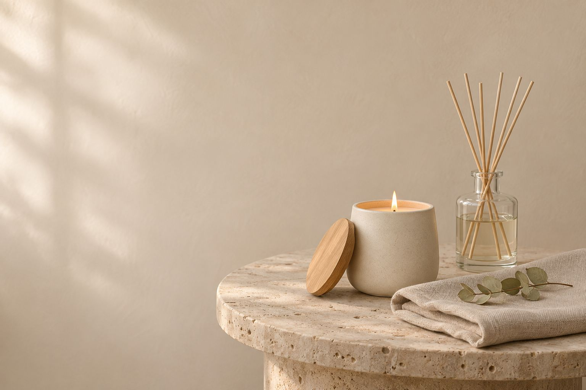
A candle you refill, instead of a jar you throw away.
Hand-poured.Clean.Slow.Refillable.Yours.
Wax. Wick. Vessel.
A coconut-and-rapeseed blend, a braided cotton wick and a glass or ceramic vessel. When the wax runs low, a refill drops straight in.
See every scent →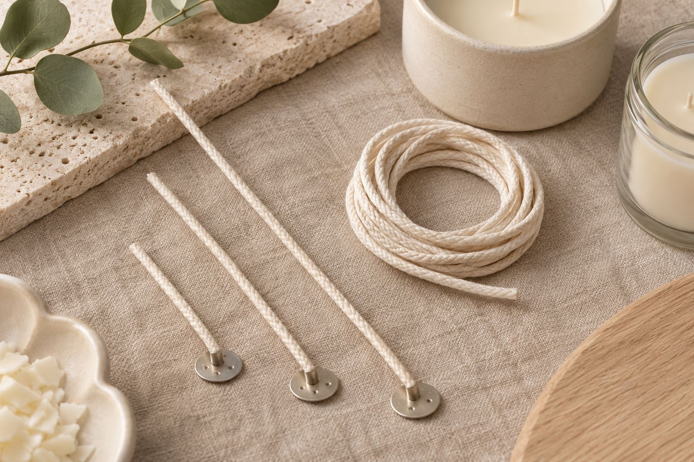
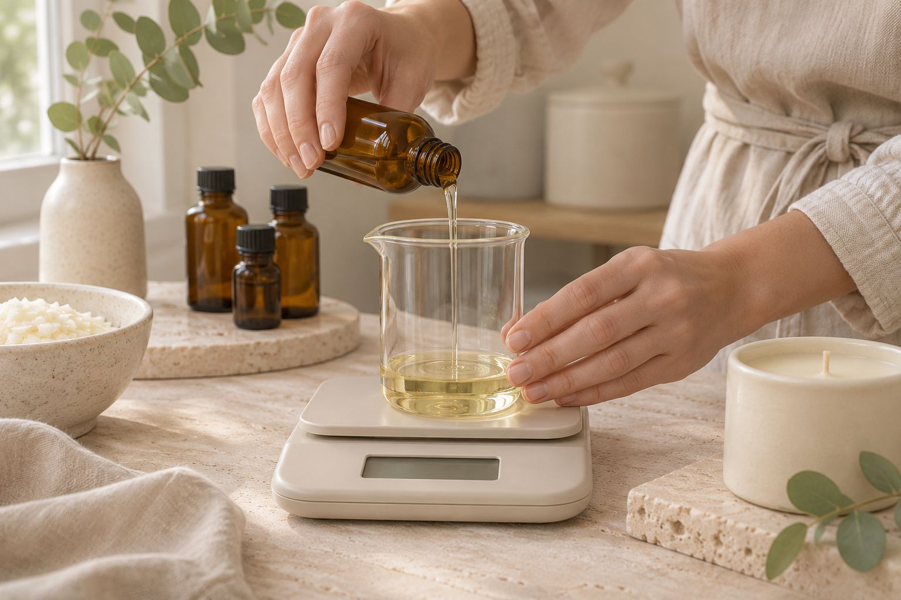
“Most people start with one scent for the living room. A year later they are refilling the same glass with something new.”
Name — Blender, Solenne
Details you can smell.
Small choices make a clean burn. Every wick is sized to its vessel.
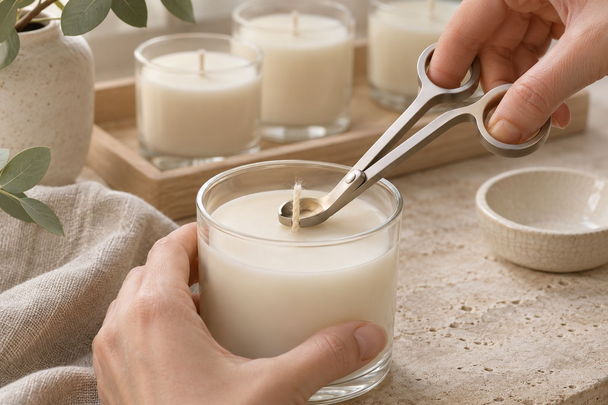
The wick
Braided cotton, chosen for each size so the flame stays low and steady.
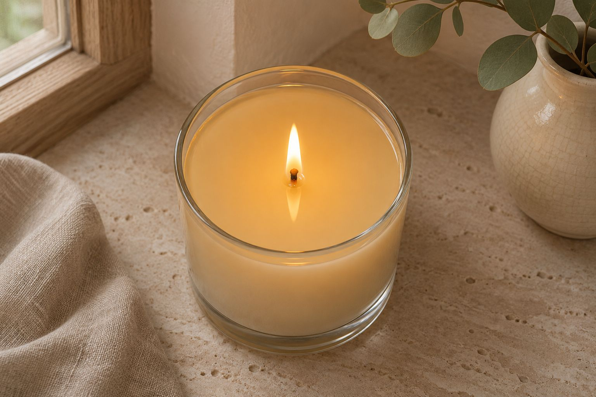
The pool
The wax melts edge to edge, so the scent fills the room and nothing is left on the sides.
The vessel
Heavy glass or ceramic from a specialist maker. It holds the heat, and it takes a refill.
In real rooms.
Full gallery →Ordering for a shop or hotel? Send us your list.
Get a quote →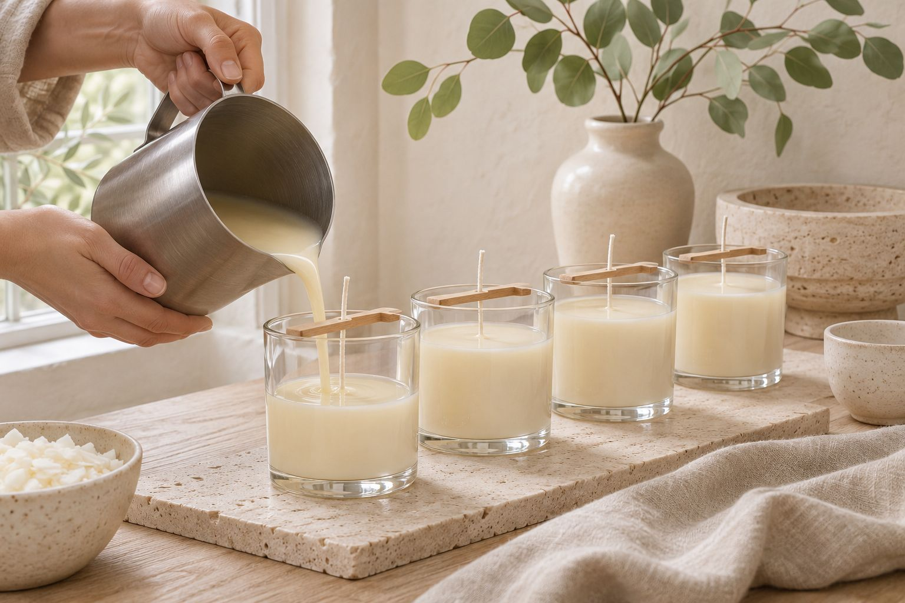
Poured by hand.
We blend every scent and pour every candle in our studio, then let it cure for two weeks. Glass and ceramic come from makers who do nothing else.
How we make it →Burn well, then refill.
Four habits for a clean flame and an even pool — and when the wax runs low, a refill takes a minute.
First burn
Let the pool reach the edge, about two to three hours. It sets the pattern for every burn after.
Trim the wick
Cut it to 5 mm before each light, for a calm flame and no soot.
Keep it still
A flat surface, away from drafts and open windows. The flame stays straight.
Snuff it out
Use a snuffer, never water. Burn up to four hours at a time.
Every candle comes with a burning card. Not sure? Message us and we will help.
Vessels and finishes.
Glass and ceramic from specialist makers, with an oak lid. Chosen to sit quietly in any room.
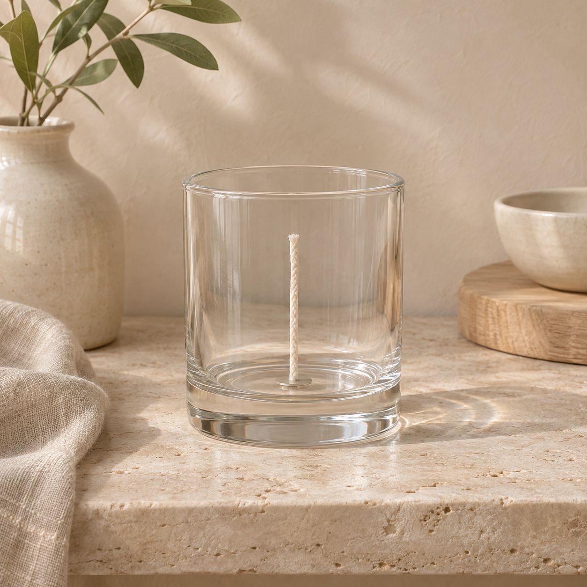
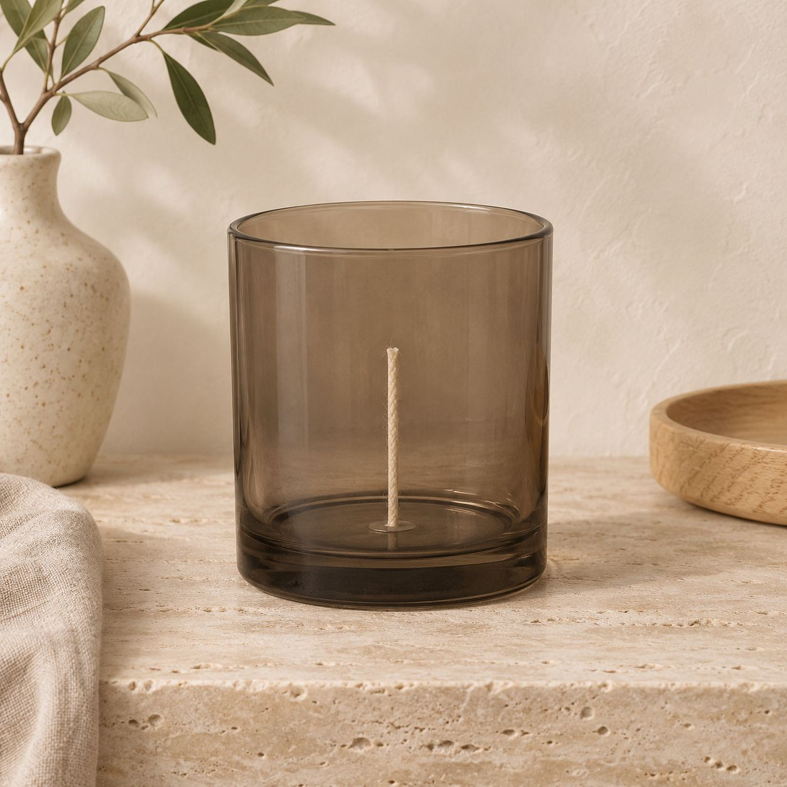
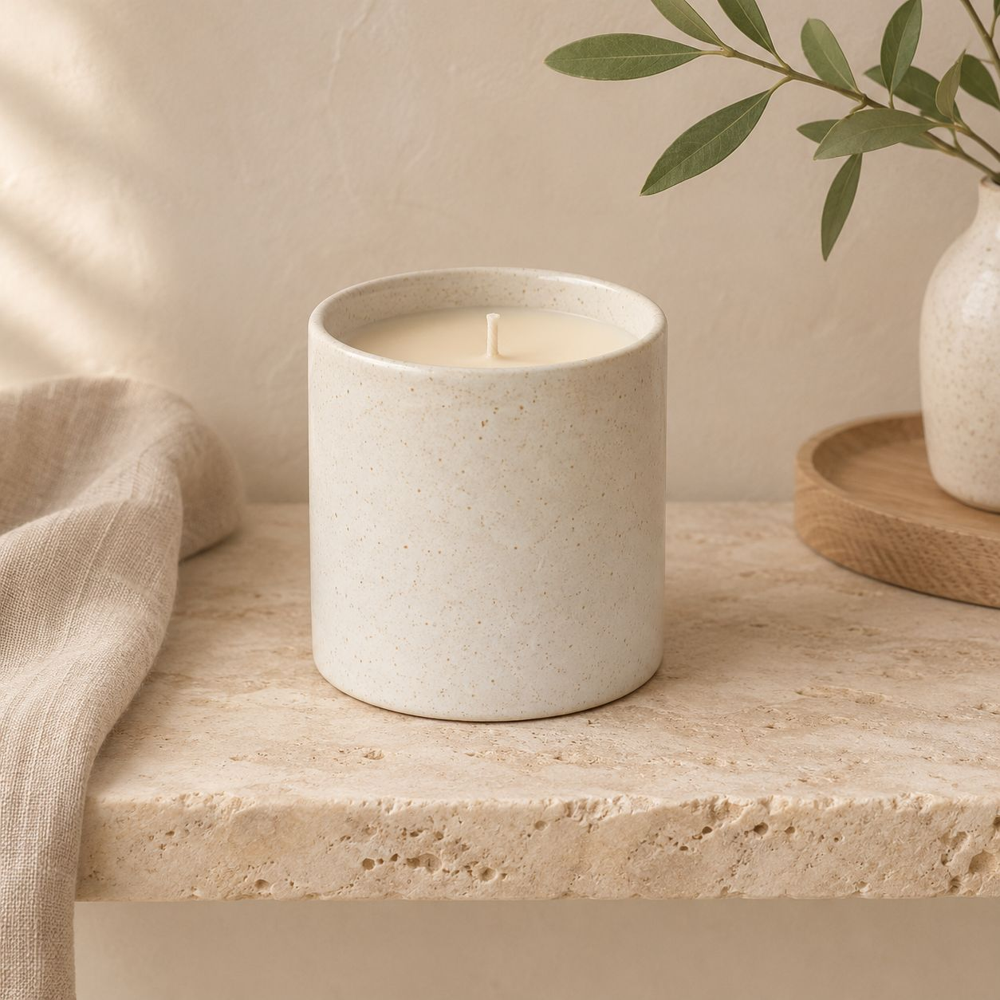
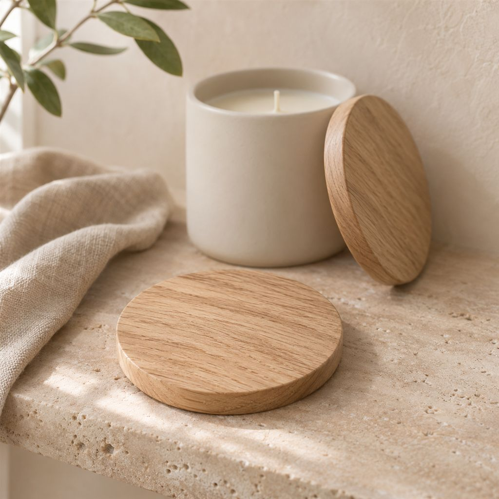
Refill, not replace.
Keep the vessel
Refills come in every size. The same glass can stay on your table for years.
Change the scent
Same vessel, new scent. Swap with the season, or the room.
Spares on their own
Lids, trimmers and snuffers are listed with codes and prices. Lose one, replace one.
Priced by the hour.
A slow burn costs less each evening, and a refill costs less than a new candle. Try it with your own numbers.
See scent prices →per hour
Want a scent of your own? Ask about custom blends.
Ask about a custom scent →How to choose.
Three sizes, one wax. Small for bedrooms and bathrooms, large for living rooms and lobbies.
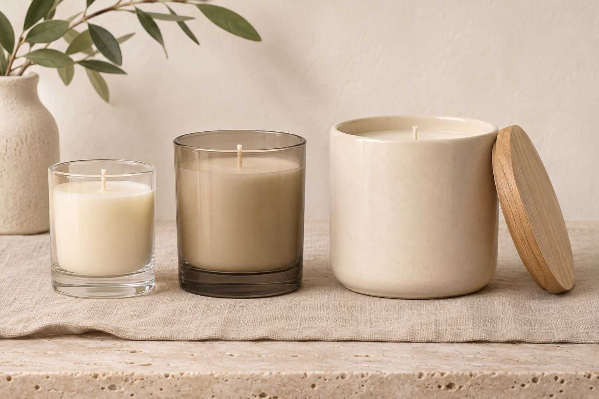
| Solenne candle | Typical paraffin candle | Single-use jar candle | |
|---|---|---|---|
| Wax | Coconut & rapeseed | Paraffin | Varies |
| Wick | Braided cotton, sized per vessel | Varies | Varies |
| Refills | Every size | Rarely | No |
| Vessel after use | Refill or reuse | Thrown away | Thrown away |
| Hotel and custom labels | Yes | Rarely | Rarely |
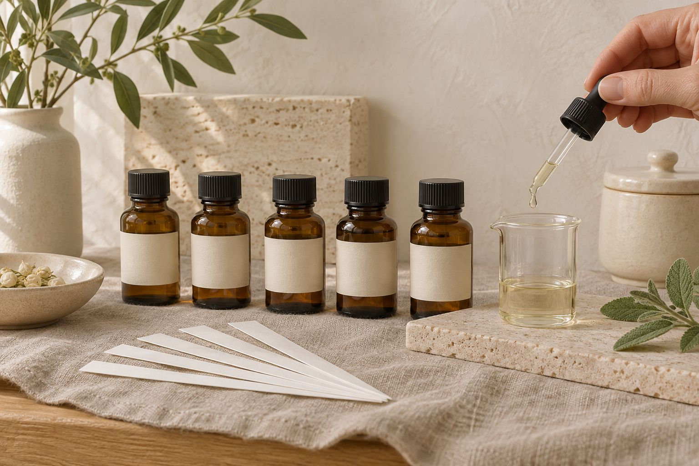
From brief to scent in three steps.
Tell us
The space, how many rooms or shops, and the mood you are after.
Try
We send a few blends to smell in the space itself.
Plan & quote
Sizes, quantities and a fixed price within 2 working days.